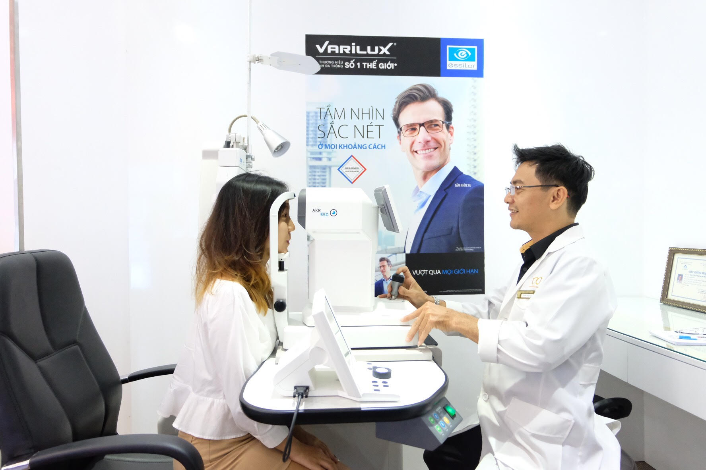
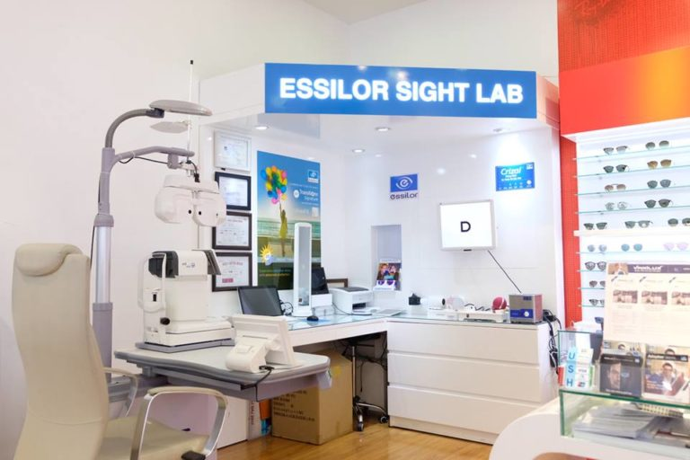
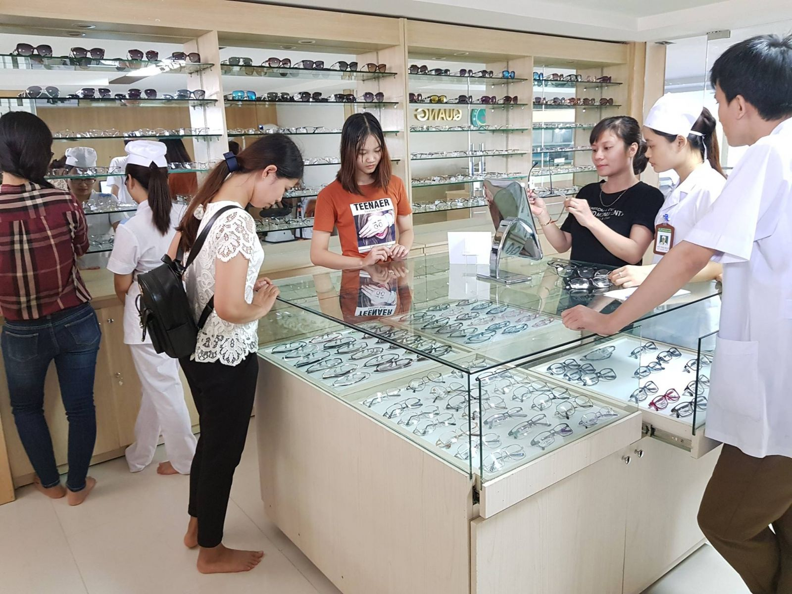

QUY TRÌNH ĐO KHÁM KHÚC XẠ THEO TIÊU CHUẨN QUỐC TẾ TẠI HỆ THỐNG MẮT VIỆT
Với sứ mệnh chăm sóc, bảo vệ những thị lực cho người Việt , Mắt Việt hỗ trợ dịch vụ đo khám mắt hàng đầu tại Việt Nam với quy trình, trang thiết bị hiện đại đạt tiêu chuẩn quốc tế cùng đội ngũ chuyên viên khúc xạ chuyên nghiệp và nhân viên tư vấn có trình độ cao được đào tạo bởi các chuyên gia quốc tế, đem đến cho khách hàng dịch vụ đo khám mắt đầy đủ, chuẩn xác và hiệu quả nhất, cam kết xứng đáng với tiêu chí Sáng – Đẹp – Niềm Tin
Tìm cửa hàng
ĐIỀU GÌ LÀM NÊN SỰ KHÁC BIỆT
TRONG QUY TRÌNH KHÁM KHÚC XẠ TẠI MẮT VIỆT?
QUY TRÌNH ĐO MẮT 12 BƯỚC TIÊU CHUẨN QUỐC TẾ
Đây là quy trình đo khám mắt được nghiên cứu và thiết kế bởi các chuyên gia khúc xạ hàng đầu thế giới của Tập đoàn Essilor Pháp được áp dụng duy nhất tại Mắt Việt.
Thông qua quy trình này, Kỹ thuật viên khúc xạ sẽ thực hiện 12 bước đo khám chi tiết để thu thập những thông tin cần thiết về tính trạng thị lực của bệnh nhân , kết hợp với việc sử dụng hệ thống máy móc đo khám hiện đại. Từ đó có được thông số chính xác về độ mắt và đưa ra chuẩn đoán về vấn đề thị lực mà khách hàng mắc phải để đưa ra liệu pháp khắc phục tối ưu nhất, đặc biệt là các loại kính phức tạp cao cấp như Kính đa tròng


ĐỘI NGŨ KỸ THUẬT VIÊN KHÚC XẠ CHUYÊN NGHIỆP
Đội ngũ kĩ thuật viên được đào tạo bài bản, kỹ lưỡng về lý thuyết mắt, các tật khúc xạ, các loại tròng kính, công năng và cách sử dụng thiết bị đo khám, quy trình cắt kính và giải pháp dành cho mỗi trường hợp, trải qua nhiều đợt kiểm tra khắt khe . Chỉ những học viên đạt tiêu chuẩn và cấp giấy chứng nhận mới được làm việc tại hệ thống Mắt Việt.

TRANG THIẾT BỊ ĐO MẮT HIỆN ĐẠI HÀNG ĐẦU TỪ CHÂU ÂU
Với sứ mệnh chăm lo cho đôi mắt Việt nên Mắt Việt luôn muốn đem lại chất lượng cao nhất cho khách hàng. Do đó, tất cả hệ thống máy móc, trang thiết bị kĩ thuật tại Mắt Việt đều được nhập khẩu chính hãng từ các nhà sản xuất lớn trên thế giới như Tập đoàn Essilor, mang công nghệ và tiêu chuẩn hiện đại bậc nhất hiện nay.
Mắt Việt tự hào là doanh nghiệp đi đầu trong việc đầu tư và sử dụng các thiết bị máy móc khúc xạ hiện đại nhất Việt Nam.
Tìm cửa hàng
LỜI KẾT
Mắt Việt tự hào mang lại chất lượng đo khám mắt đạt tiêu chuẩn cao, chính xác, mang lại sự an tâm cho khách hàng về chất lượng cũng như dịch vụ. Đặc biệt, dịch vụ đo khám mắt tại Mắt Việt hoàn toàn miễn phí, dù khách hàng có mua kính hay chỉ thăm khám mắt đơn thuần.
Bạn nên đi đo và khám mắt mỗi 6 tháng để đảm bảo thị lực vẫn luôn rõ nét và mắt không có các bệnh tìm ẩn nào. Nếu đã trên 6 tháng bạn chưa đo khám mắt, đừng ngại hãy đến với Mắt Việt để kiểm tra, đo khám và trải nghiệm hệ thống đo khám mắt hàng đầu nhé.
Mắt Việt – Sáng đẹp niềm tin!